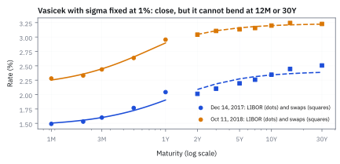

20.5 Calibrating Vasicek and Cox-Ingersoll-Ross (CIR)
parameter ไม่ได้มาจากการมองเส้น curve แล้วเดา แต่จาก objective ที่มีหน่วย น้ำหนัก และข้อมูลซึ่งระบุไว้
โต๊ะเทรดต้องการปรับเทียบแบบจำลอง Vasicek กับข้อมูลอัตราดอกเบี้ย 5 ช่วงอายุด้วย short rate เริ่มต้น 5.20% โดยปรับ speed ดึงกลับ 0.65 และอัตราเฉลี่ยระยะยาว 4.50% ช็อกดอกเบี้ยจะสลายตัวลงครึ่งหนึ่งในเวลากี่ปี?
เฉลย: 1.0664 ปี คำนวณจากค่า half-life ซึ่งเท่ากับ natural log ของ 2 หารด้วยความเร็วการดึงกลับ 0.65 บ่งชี้ว่าหากดอกเบี้ยกระโดดหนีค่าเฉลี่ยระยะยาว แรงดึงกลับจะปิดช่องว่างลงได้ครึ่งหนึ่งในเวลาประมาณหนึ่งปีเศษ
ศัพท์ของ calibration ที่ต้องนิยามก่อน optimize
- short-rate model
- model ที่กำหนด dynamics ของอัตราระยะสั้นตัวเดียวและ derive bond prices ทุก maturity จากมัน ใช้สร้าง curve-consistent scenarios และราคา rate derivatives
- Vasicek model
- Gaussian mean-reverting short-rate model ที่มี diffusion คงที่ ใช้ให้ closed-form bond prices แต่ยอมให้อัตราติดลบ
- Cox-Ingersoll-Ross (CIR) model
- square-root mean-reverting short-rate model ที่ diffusion ลดลงเมื่อ rate ใกล้ศูนย์ ใช้รักษา nonnegative rate ภายใต้เงื่อนไขที่เหมาะสม
- risk-neutral measure
- probability measure สำหรับ valuation ที่ expected discounted asset prices ไม่มี drift ส่วนเกิน ใช้เชื่อม dynamics กับราคาตลาด ไม่ใช่ forecast frequency จริง
- mean reversion
- แรงที่ดึง short rate กลับสู่ระดับระยะยาวด้วยความเร็วที่กำหนด ใช้ควบคุม persistence และรูป yield curve
- long-run level
- ระดับที่ conditional mean ของ short rate มุ่งหาเมื่อ horizon ยาว ใช้ตีความ parameter $\theta$ ภายใต้ measure ที่ calibrate
- diffusion
- พจน์สุ่มที่กระจาย paths รอบ drift ใช้สร้าง rate uncertainty และ option time value
- calibration
- การเลือก parameters ให้ model outputs ใกล้ market targets ตาม objective ที่กำหนด ใช้ส่ง model เข้าสู่ valuation date เดียวกับราคา
- objective function
- scalar loss ที่รวม weighted differences ระหว่าง model กับ market ใช้บอก optimizer ว่า parameter set ใดดีกว่า
- residual
- model value ลบ market value ของ quote หนึ่งตัว ใช้ตรวจรูปแบบของ misfit แทนการดูเพียง loss รวม
- least squares
- วิธีลดผลรวมกำลังสองของ residuals ใช้ calibrate เมื่อต้องการวัด error บน scale เดียวกันทุกจุด
- parameter bound
- ช่วงค่าที่ optimizer ได้รับอนุญาตให้ค้นหา ใช้บังคับ positivity หรือความสมเหตุผลและป้องกัน numerical explosion
- regularization
- penalty ต่อ parameter ที่สุดโต่งหรือขยับจากวันก่อนมาก ใช้ทำให้ calibration เสถียรเมื่อข้อมูลระบุ parameter ไม่ชัด
- identifiability
- ระดับที่ข้อมูลแยก parameter sets ซึ่งให้ราคาใกล้กันออกจากกันได้ ใช้ตัดสินว่าควรรายงาน parameter หรือ uncertainty พร้อมกัน
- Feller condition
- เงื่อนไข $2\kappa\theta\geq\sigma^2$ ของ CIR ที่ทำให้ boundary ศูนย์ไม่ถูกแตะภายใต้กรณีมาตรฐาน ใช้ตรวจพฤติกรรมใกล้ศูนย์
สัญกรณ์และหน่วยของ dynamics กับ fit
| สัญลักษณ์ | ความหมาย | หน่วย |
|---|---|---|
| $r_t$ | instantaneous short rate ณ เวลา $t$ | ต่อปี |
| $r_0$ | short rate ณ valuation date ซึ่ง fix จากข้อมูล | ต่อปี |
| $\kappa$ | mean-reversion speed | ต่อปี |
| $\theta$ | long-run level ภายใต้ risk-neutral measure ใน calibration นี้ | ต่อปี |
| $\sigma_V$ | absolute volatility ของ Vasicek | rate ต่อรากปี |
| $\sigma_C$ | square-root volatility coefficient ของ CIR | รากของ rate ต่อรากปี |
| $W_t^Q$ | Brownian motion ภายใต้ risk-neutral measure | รากปี |
| $t,dt$ | เวลาและช่วงเวลาเล็กใน short-rate dynamics | ปี |
| $P(t,T)$ | model price ณ เวลา $t$ ของ zero-coupon bond ที่จ่ายหนึ่ง USD ที่ $T$ | USD |
| $A(t,T),B(t,T)$ | deterministic affine bond-pricing functions | $A$ ไม่มีหน่วย, $B$ เป็นปี |
| $\gamma$ | CIR auxiliary decay parameter เท่ากับรากของ $\kappa^2+2\sigma_C^2$ | ต่อปี |
| $y_i^{mkt}$ | อัตราผลตอบแทนแบบทบต้นต่อเนื่องที่อ่านจากตลาดจริง สำหรับเงินก้อนเดียวที่ครบกำหนดตอน $T_i$ | ต่อปี |
| $y_i^{mdl}$ | model zero yield ที่ maturity $T_i$ | ต่อปี |
| $w_i$ | น้ำหนักของ quote ลำดับที่ $i$ ใน objective | ผกผันกำลังสองของหน่วย residual |
| $J$ | objective function รวม | ไม่มีหน่วยเมื่อ normalize residual แล้ว |
| $T_i$ | maturity ของ curve target | ปี |
| $L(T)$ | อัตรา LIBOR อายุ $T$ แบบ simple interest | ต่อปี |
| $s(T)$ | par swap rate อายุ $T$ ที่ขาคงที่จ่ายทุกครึ่งปี | ต่อปี |
| $\mathrm{SSRE}$ | ผลรวมกำลังสองของ error แบบสัดส่วนของ LIBOR และ swap | ไม่มีหน่วย |
| $P_t,P_r,P_{rr}$ | ความชันของราคา bond เทียบเวลา ความชันเทียบ short rate และความโค้งเทียบ short rate | ตามหน่วยของ $P$ ต่อหน่วยของตัวที่เทียบ |
| $e_L,e_s$ | error แบบสัดส่วนของ LIBOR และ swap คือค่า model หารค่าตลาดแล้วลบหนึ่ง | ไม่มีหน่วย |
ที่มาที่ไป: จากแบบจำลองสวย ๆ สู่ตัวเลขที่ใช้ได้จริง
Oldrich Vasicek เสนอแบบจำลองอัตราดอกเบี้ยในปี 1977 และ John Cox, Jonathan Ingersoll กับ Stephen Ross เสนอรุ่นที่แก้ปัญหาอัตราติดลบในปี 1985
ทั้งสองแบบมีสูตรราคาพันธบัตรแบบปิด ซึ่งเป็นสมบัติที่หายากและมีค่ามาก เพราะทำให้คำนวณเร็วพอใช้งานได้
แต่สูตรจะใช้ไม่ได้เลยจนกว่าจะรู้ค่า parameter และค่าเหล่านั้นไม่ได้มาจากไหน ต้องหาเอาจากราคาตลาด
งานหานั้นเรียกว่าการปรับเทียบ และมันไม่ใช่งานเชิงกลไกอย่างที่คิด เพราะต้องตัดสินใจก่อนว่าจะวัดความใกล้เคียงเป็นราคาหรือเป็น yield ซึ่งเป็นการเลือกที่เปลี่ยนคำตอบ และควรระบุไว้ในเอกสารเสมอ
ศัพท์ชุดที่สอง: ตระกูลของ model และการวัด error บนข้อมูลจริง
- Heath-Jarrow-Morton (HJM) framework
- กรอบที่ให้ instantaneous forward rate ทุกอายุเป็นตัวสุ่มพร้อมกัน ใช้เริ่มจาก curve วันนี้ได้พอดีเพราะ curve ทั้งเส้นเป็น input
- LIBOR Market Model (LMM)
- market model ที่ให้ LIBOR แต่ละช่วงซึ่งเห็นและซื้อขายได้ในตลาดเป็นตัวสุ่ม ใช้ตั้งราคา cap และ floor
- Swap Market Model (SMM)
- market model ที่ให้ swap rate เป็นตัวสุ่ม ใช้ตั้งราคา swaption
- parsimony
- การมี parameter น้อย ข้อดีคือเสถียรและคำนวณเร็ว ข้อเสียคือ fit curve ของตลาดได้ไม่พอดีทุกจุด
- time-homogeneous
- สูตรที่ขึ้นกับเวลาที่เหลือ $T-t$ อย่างเดียว ไม่ขึ้นกับวันที่ในปฏิทิน เกิดเมื่อ $\kappa$, $\theta$ และ $\sigma$ คงที่
- sum of squared relative errors (SSRE)
- ผลรวมกำลังสองของ error แบบสัดส่วน ใช้ให้ quote ระดับ 1.5% กับ 3% ที่พลาดเป็นสัดส่วนเท่ากันได้คะแนนเท่ากัน
สี่ตระกูลของ model ดอกเบี้ย และทำไมหัวข้อนี้เลือก short rate
ก่อนตั้งราคา derivative ของดอกเบี้ยสักตัว ต้องเลือกก่อนว่าจะให้อะไรเป็นตัวสุ่ม คอร์สแยกไว้สี่ทาง ตัวสุ่มต่างกัน แต่ปลายทางเดียวกันคือราคา zero-coupon bond ทุกอายุ แล้วใช้ราคาชุดนั้นตั้งราคาของอื่นต่อ
short-rate model ให้อัตราทบต้นต่อเนื่องชั่วขณะ $r_t$ เป็นตัวสุ่มตัวเดียว แล้ว derive bond ทุกอายุจากมัน ส่วน Heath-Jarrow-Morton (HJM) ให้ forward rate ทุกอายุเป็นตัวสุ่มพร้อมกัน ราคา zero-coupon จึงได้ตรง ๆ จาก forward
ทั้ง $r_t$ และ instantaneous forward rate ไม่มีใครซื้อขายได้จริง market model จึงให้ของที่เห็นในตลาดเป็นตัวสุ่มแทน LIBOR Market Model (LMM) ให้ LIBOR เป็นตัวสุ่ม และ Swap Market Model (SMM) ให้ swap rate เป็นตัวสุ่ม
short rate ยังนิยมเพราะมี parameter น้อยและ implement ง่าย เหมาะเมื่อสิ่งที่สำคัญคือระดับของดอกเบี้ย ไม่ใช่รูปร่างของ curve ราคาที่ต้องจ่ายคือ fit curve จริงได้ไม่พอดี ซึ่งขั้นที่ 13 จะแสดงเป็นตัวเลข
เลือกข้อมูลและ convention ก่อนเลือก optimizer
ตัวอย่างใช้ USD zero yields แบบ continuously compounded ณ maturities 0.5, 1, 2, 5 และ 10 ปี: 5.097160%, 5.013204%, 4.887677%, 4.697454% และ 4.594414% เป็น curve สังเคราะห์ที่สร้างจาก Vasicek เพื่อทดสอบการหา parameter กลับ ไม่ใช่ market snapshot หรือ live quotes กำหนด $r_0=5.20\%$ และให้น้ำหนัก residual เท่ากันใน basis points
สำหรับ derivative ที่ collateralized ด้วย USD cash ควร target SOFR overnight indexed swap (OIS) discount curve; UST curve มี Treasury liquidity และ convenience effects จึงไม่ควรถูกเรียกเป็น curve เดียวกันโดยเงียบ ๆ
ขั้นที่ 1 — นิยามของแบบจำลอง Vasicek
บรรทัดนี้เป็น นิยาม ของแบบจำลองที่เราเลือกใช้ ไม่ใช่ความจริงที่พิสูจน์ได้ รูปของมันเหมือนที่หัวข้อ 12.4 แก้ไว้แล้วทุกประการ ก้อนแรกดึงอัตรากลับเข้าหาระดับระยะยาว ด้วยแรงที่แปรตามระยะห่าง ก้อนที่สองเป็นแรงสุ่มที่มีขนาดคงที่ ไม่ว่าอัตราจะสูงหรือต่ำ ข้อดีคือแก้ออกมาเป็นสูตรปิดได้ ข้อเสียคือมันยอมให้อัตราติดลบ ซึ่งเป็นปัญหาที่ขั้นถัดไปพยายามแก้
drift ดึง rate กลับหา $\theta$ ด้วย speed $\kappa$ และ diffusion เพิ่ม Gaussian shock ขนาดคงที่ $\sigma_V$
ขั้นที่ 2 — นิยามของแบบจำลอง CIR: ความผันผวนหดเมื่ออัตราเข้าใกล้ศูนย์
บรรทัดนี้เป็น นิยาม ของอีกแบบจำลองหนึ่ง ต่างจากขั้นที่ 1 ที่จุดเดียว คือแรงสุ่มถูกคูณด้วยรากของอัตราเอง ผลที่ตามมาอ่านได้ทันที: เมื่ออัตราเข้าใกล้ศูนย์ รากก็เข้าใกล้ศูนย์ แรงสุ่มจึงหายไป เหลือแต่แรงดึงกลับซึ่งเป็นบวก อัตราจึงถูกผลักขึ้นและไม่ติดลบ ถ้าตัวเลขของแบบจำลองอยู่ในช่วงที่เหมาะสม ราคาที่ต้องจ่ายคือความยุ่งยากในการคำนวณ เพราะแรงสุ่มไม่คงที่แล้ว
เมื่อ rate ใกล้ศูนย์ stochastic shock หดลง จึงต่างจาก Vasicek ที่ absolute shock เท่ากันทุกระดับ
ขั้นที่ 3 — ของที่ให้มา: ราคา bond ของสองแบบจำลองนี้เขียนเป็นสูตรปิดได้
บรรทัดแรกคือความหมายของราคา bond ใน short-rate model: ทบต้นด้วย $r$ ตลอดทางจาก $t$ ถึง $T$ แล้วกลับด้านเป็นตัวคิดลด เฉลี่ยทุกเส้นทางภายใต้ $Q$ บรรทัดที่สองเป็น ของที่ให้มา คือค่าเฉลี่ยนี้เขียนเป็นสูตรปิดได้ ซึ่งตรวจได้ด้วยการแทนรูปนี้ลงในสมการตั้งราคา
ทางลัดนี้มีอยู่เพราะ drift กับความผันผวนกำลังสองของสองแบบจำลองเป็นเส้นตรงในตัวแปรสถานะ สมบัติเดียวกับที่หัวข้อ 13.7 ใช้ บรรทัดที่สามแปลงราคาเป็นอัตราตามหัวข้อ 20.1 ให้เทียบกับเป้าหมายในหน่วยเดียวกัน และความเร็วของสูตรปิดคือเหตุผลที่ calibrate ได้ทันใช้งาน
closed-form bond price ถูกแปลงเป็น zero yield ภายใต้ compounding เดียวกับ market target ก่อนสร้าง residual
$A$ และ $B$ ขึ้นกับ $t$ และ $T$ ผ่าน $T-t$ อย่างเดียว เรียกว่า time-homogeneous เพราะ $\kappa$, $\theta$ และ $\sigma$ ไม่เปลี่ยนตามวันที่ bond อายุ 5 ปีวันนี้กับ bond อายุ 5 ปีในปีหน้าใช้สูตรเดียวกัน ต่างกันแค่ $r_t$ ที่ใส่
ที่มาของ A และ B: ใส่รูปคำตอบกลับในสมการราคา
ใช้เวลาที่เหลือ tau และให้ a เป็น log ของ A ตอนครบกำหนด bond จ่ายหนึ่งแน่นอน ราคาจึงเป็นหนึ่งทุก rate ทำให้ a และ B เริ่มที่ศูนย์
สมการราคาในหัวข้อ 12.4 บอกให้คูณ slope ด้วย drift บวกครึ่งหนึ่งของ variance คูณ curvature แล้วหักดอกเบี้ยจากราคา แทน derivative ของ exponential ลงไปและหารด้วยราคา จะเหลือบรรทัดที่สี่
เทียบพจน์ที่คูณ r ทั้งสองข้างได้สมการของ B ส่วนพจน์ที่ไม่มี r ให้สมการของ a แก้ B ก่อนแล้วนำเข้า integral ของ a จึงได้สูตรด้านล่าง
สำหรับ CIR พจน์ diffusion มี r เพิ่ม ทำให้สมการ B เปลี่ยนเป็นหนึ่งลบ kappa B ลบครึ่งหนึ่งของ sigma C กำลังสองคูณ B กำลังสอง
ส่วน a เหลือ derivative เท่ากับลบ kappa theta B
แก้สมการ differential equation ทีละขั้น — หา function B_V(T) จาก integrating factor
ฟิสิกส์เบื้องหลังสมการนี้คือการสะสมตัวคิดลดตลอดอายุพันธบัตร หากไม่มี mean reversion (นั่นคือ $\kappa \to 0$) ค่า $B(T)$ จะลู่เข้าหา $T$ พอดี ซึ่งทำให้ราคาพันธบัตรหดตัวแบบเส้นตรงตามอายุ
แต่เมื่อมี mean reversion แรงดึงกลับสู่อัตราเฉลี่ยระยะยาวจะช่วยลดความอ่อนไหวของพันธบัตรระยะยาว ส่งผลให้ duration ของพันธบัตรระยะยาวในแบบจำลอง Vasicek มีเพดานจำกัดอยู่ที่ $1/\kappa$ เสมอ
สมการ differential equation ของ $B(\tau)$ เป็นสมการเชิงเส้นอันดับหนึ่ง วิธีมาตรฐานในการแก้คือคูณตลอดด้วย integrating factor $e^{\kappa\tau}$ เพื่อยุบสองพจน์ทางซ้ายให้กลายเป็น derivative ของผลคูณ
integrate ทั้งสองข้างตั้งแต่เวลาศูนย์ถึง $T$ และใส่เงื่อนไขเริ่มต้น $B(0)=0$ ซึ่งมาจากข้อเท็จจริงว่า ณ วันครบกำหนด พันธบัตรจ่ายเงินหนึ่งหน่วยเสมอโดยไม่ขึ้นกับอัตราดอกเบี้ย
ย้าย $e^{\kappa T}$ ไปหารทางขวา จะได้สูตร $B_V(T)$ ทันที โดยสูตรนี้บอกว่าความไวของราคาพันธบัตรต่อ short rate จะอิ่มตัวเข้าใกล้ $1/\kappa$ เมื่อ maturity ยาวขึ้น ไม่ใช่โตตามเวลาแบบเส้นตรง
ขั้นที่ 4 — Vasicek bond functions
เขียนสองตัวที่ประกอบเป็นสูตรราคาของ Vasicek ออกมาให้ครบ
$B_V$ วัด exposure ของ bond ต่อ short rate และ $A_V$ รวมผลของ mean reversion กับ convexity จาก Gaussian uncertainty
ขั้นที่ 5 — CIR bond functions
ของ CIR หน้าตาซับซ้อนกว่า แต่ทำหน้าที่เดียวกันเป๊ะ
square-root diffusion เปลี่ยนทั้ง decay coefficient และ normalization แต่ยังคงรูป exponential-affine ใน current short rate
ที่มาของ CIR: ใช้รูป $P=e^{a-Br}$ ใน partial differential equation เหมือน Vasicek แต่ diffusion variance เป็น $\sigma_C^2r$ แทนค่าจะได้ $B^{\prime}=1-\kappa B-\sigma_C^2B^2/2$ และ $a^{\prime}=-\kappa\theta B$ โดยเริ่มทั้งสองที่ศูนย์
ให้ $b_+=(-\kappa+\gamma)/\sigma_C^2$ และ $b_-=(-\kappa-\gamma)/\sigma_C^2$ ซึ่งได้จากสูตรรากสมการกำลังสอง จึงเขียน $B^{\prime}=-\sigma_C^2(B-b_+)(B-b_-)/2$ แยกตัวแปรแล้วใช้เศษส่วนย่อย $1/[(B-b_+)(B-b_-)]=[1/(B-b_+)-1/(B-b_-)]/(b_+-b_-)$
Integrate และใช้ $B(0)=0$ ได้ $(B-b_+)/(B-b_-)=(b_+/b_-)e^{-\gamma T}$ ถ้าเรียกด้านขวาว่า $h$ จัดเป็น $B(1-h)=b_+-hb_-$ แล้วหาร $1-h$ แทนรากทั้งสองและคูณด้วย $e^{\gamma T}$ จึงได้สูตร $B_C$
สำหรับตัวคูณ $A$ มี $a(T)=-\kappa\theta\int_0^T B_C(s)ds$ ให้ $D(s)=(\gamma+\kappa)(e^{\gamma s}-1)+2\gamma$ จะตรวจได้ว่า $B_C(s)=2[ D^{\prime}(s)/D(s)-(\kappa+\gamma)/2]/\sigma_C^2$ ดังนั้น integral ใช้ $\ln D(s)$ กับพจน์เส้นตรง เมื่อแทนขอบ $D(0)=2\gamma$ แล้วใช้ $A=e^a$ จะได้สูตร $A_C$ ที่แสดง
สไลด์ของคอร์สเขียน $B_C=2/(\kappa+\gamma\coth(\gamma T/2))$ และเขียน $A_C$ ด้วย $\cosh$ กับ $\sinh$ เป็นสูตรเดียวกับข้างบน ตรวจได้จาก $\gamma\coth(\gamma T/2)=\gamma+2\gamma/(e^{\gamma T}-1)$
objective ต้องบอกหน่วยของ error
ก่อนกด optimizer ต้องเลือกก่อนว่า “พลาด” วัดเป็นอะไร ถ้าวัดเป็น USD bond ใหญ่จะครองคะแนน; ถ้าวัด raw yield quote ที่ไม่น่าเชื่ออาจดังเกินจริง
ตัวอย่างนี้แปลงความพลาดของ yield เป็น basis points แล้วให้ทุกจุดน้ำหนักเท่ากัน. งานจริงค่อยให้น้ำหนักตาม bid–ask หรือ duration และต้องบันทึกกติกานี้คู่กับ parameter
ขั้นที่ 6 — least-squares objective บน yield basis points
calibration ไม่ใช่การมองกราฟแล้วเดา ต้องนิยามก่อนว่า 'ใกล้' แปลว่าอะไร ขั้นนี้เลือกวัดเป็น basis point ของ yield เพราะเป็นหน่วยที่โต๊ะเถียงกันจริง
คูณ yield difference ด้วยสิบยกกำลังสี่เพื่อแปลงจาก rate decimal เป็น basis points แล้ว square และ weight ก่อนรวม
ให้คะแนนก่อนและหลังหมุนปุ่ม
ตัวเลขสามจุดนี้เป็นแบบฝึกเล็กสำหรับ objective เดิม ให้น้ำหนักทุกจุดหนึ่งเท่ากัน เริ่มจาก residual ที่เป็น basis points แล้วค่อยยกกำลังสอง เครื่องหมายต่างกันจึงไม่หักล้างความผิดพลาด
คะแนน 3 ดีขึ้นจาก 14 แต่การ fit quote สองตัวพอดีแล้วทิ้งจุดสุดท้ายพลาด 4 basis points กลับได้ 16 ซึ่งแย่ลง optimizer จึงต้องดูทุก maturity พร้อมกัน
ตัวอย่างห้าจุดข้างล่างสร้าง target จาก Vasicek ที่รู้ parameter ล่วงหน้า การหา parameter กลับเป็นการตรวจระบบด้วยข้อมูลสังเคราะห์ ไม่ใช่หลักฐานว่าได้ parameter ที่แม่นจากข้อมูลตลาดจริง
ขั้นที่ 7 — Vasicek parameter set ที่ recover ได้
ผลของการแก้ปัญหาที่ตั้งไว้ ได้ค่าออกมาสามตัว
mean-reversion speed เท่ากับ 0.65 ต่อปี long-run level 4.5% ต่อปี และ absolute volatility 1.2 จุด ต่อรากปี
ขั้นที่ 8 — CIR fit บน curve เดียวกัน
ทำซ้ำด้วย model ที่สอง บนข้อมูลชุดเดียวกัน จะได้เทียบกันได้อย่างยุติธรรม
CIR สร้างเส้นใกล้กันด้วย parameter geometry ต่างกัน root-mean-square yield error อยู่ประมาณ 0.02745 basis point
แล้วเอาไปใช้ทำอะไรได้จริงบ้าง
การปรับ parameter ของแบบจำลองให้ตรงกับตลาด เป็นงานที่ต้องทำก่อนใช้แบบจำลองทุกครั้ง
ใช้แปลงราคาที่ตลาดเสนอ ให้กลายเป็นค่าที่ใส่แบบจำลองได้
ใช้เปรียบเทียบแบบจำลองสองตัวบนข้อมูลชุดเดียวกัน เพื่อเลือกตัวที่เหมาะกว่า
ใช้ติดตามว่าค่าที่ปรับได้เปลี่ยนไปอย่างไรตามเวลา ซึ่งเป็นสัญญาณว่าแบบจำลองยังใช้ได้หรือไม่
Figure 20.5a — model curves ซ้อนตลาดได้แต่ไม่ได้เหมือนกันเชิง dynamics

Vasicek fit target ที่สร้างจากตัวมันเองแทบพอดี ส่วน CIR คลาดเพียงเศษ basis point เส้นที่มองไม่แยกบนกราฟยังให้ rate distribution และ option prices ต่างกันได้
Figure 20.5b — residual plot ขยายสิ่งที่ curve plot ซ่อน

CIR residuals อยู่ระหว่างประมาณ -0.031 ถึง 0.038 basis point และสลับเครื่องหมายตาม maturity การดู residual pattern ช่วยแยก rounding noise จาก systematic misspecification
ขั้นที่ 9 — conditional mean ทำให้ $\kappa$ กับ $\theta$ ตีความได้
ตัวเลขที่ได้ยังไม่มีความหมายจนกว่าจะแปลได้ ขั้นนี้เชื่อมค่าที่ fit ได้ เข้ากับคำถามที่ตอบได้จริง คือดึงกลับเร็วแค่ไหน และดึงกลับไปหาอะไร
เมื่อเริ่ม 5.2% mean เคลื่อนลงหา 4.5% และช่องว่างครึ่งหนึ่งทุกประมาณ 1.0664 ปีภายใต้ risk-neutral dynamics
ผลเฉลยแม่นตรงของ Vasicek stochastic differential equation (SDE) — ที่มาของ conditional mean และ variance
ผลเฉลยแม่นตรงของ stochastic differential equation (SDE) นี้ให้ภาพกลไกของ mean reversion อย่างเป็นรูปธรรม เมื่อเวลาผ่านไป น้ำหนักของอัตราเริ่มต้น $r_0$ จะสลายตัวแบบ exponential ด้วยอัตรา $\kappa$ ขณะที่น้ำหนักของระดับระยะยาว $\theta$ จะเพิ่มขึ้นจนเข้าแทนที่ทั้งหมด
ในระยะยาวเมื่อเวลา $t \to \infty$ ระดับ variance จะลู่เข้าสู่ค่าคงที่ $\frac{\sigma_V^2}{2\kappa}$ ไม่ได้กระจายกว้างขึ้นเรื่อย ๆ แบบ Brownian motion ทั่วไป แสดงให้เห็นว่าแรงดึงกลับทำหน้าที่ตีกรอบไม่ให้อัตราดอกเบี้ยลอยเตลิดอย่างไร้ขอบเขต
ใช้ Itô's lemma กับผลคูณ $e^{\kappa t}r_t$ พจน์ drift $\kappa r_t$ จะหักล้างกันพอดี เหลือเฉพาะแรงดึงคงที่ $\kappa\theta$ และ stochastic shock เท่านั้น
integrate ทั้งสองข้างจากศูนย์ถึง $t$ แล้วคูณด้วย $e^{-\kappa t}$ จะได้รูปผลเฉลยแม่นตรงของ short rate ที่แยกส่วนกำหนดได้ออกจากส่วนสุ่มอย่างสมบูรณ์
เมื่อหา expected value พจน์ stochastic integral จะหายไปเป็นศูนย์ เหลือเพียง conditional mean ส่วน variance ได้มาจากการ integrate กำลังสองของ deterministic kernel ตามคุณสมบัติของ Brownian motion
สไลด์ของคอร์สพิมพ์พจน์แรกเป็น $e^{\kappa t}r_0$ ซึ่งตกเครื่องหมายลบ ถ้าเป็นบวกจริงอัตราเริ่มต้นจะโตขึ้นเรื่อย ๆ แทนที่จะจางหาย แถวที่เริ่มด้วย $r_t$ ข้างบนคือรูปที่ถูก
Figure 20.5c — mean-reversion pull แยก speed ออกจาก level

เส้นที่เริ่มเหนือและใต้ 4.5% เคลื่อนกลับหาระดับเดียวกัน ความเร็วการเข้าใกล้ถูกกำหนดโดย 0.65 ต่อปี ไม่ใช่โดย volatility
Figure 20.5d — objective valley แสดง parameter trade-off

หลายคู่ของ mean-reversion speed กับ long-run level ให้ curve ใกล้กัน เกิด valley ยาวใน loss surface จึงควรรายงาน optimizer diagnostics และ parameter uncertainty ไม่ใช่เพียงจุดต่ำสุดหกตำแหน่งทศนิยม
ขั้นที่ 10 — Feller check สำหรับ CIR fit
เช็กว่าค่าที่ fit ได้ยังทำให้อัตราอยู่เหนือศูนย์หรือไม่ ก่อนนำไปใช้ต่อ
parameter set นี้ผ่าน Feller condition อย่างมากภายใต้หน่วยเดียวกัน จึงไม่แตะ boundary ศูนย์ในกรณีมาตรฐาน
Figure 20.5e — diffusion ของ CIR หดเมื่อ rate เข้าใกล้ศูนย์

Vasicek absolute diffusion คงที่ 1.2 จุด ต่อรากปี ส่วน CIR diffusion coefficient เพิ่มตามรากของ rate พฤติกรรม boundary จึงเป็นผลของ functional form ไม่ใช่ Feller check เพียงบรรทัดเดียว
ขั้นที่ 11 — ราคา bond ขยับอย่างไรเมื่อ short rate ขยับ
สูตรปิดบอกราคาวันนี้ แต่ถ้าจะ hedge ต้องรู้ว่าราคาแกว่งแค่ไหน ใช้ Itô's lemma กับ $P(t,r_t)$ แล้วให้สมการราคาในส่วนที่มาของ A และ B ทำงานแทน
แทน $dr_t$ จากขั้นที่ 1 และใช้ $(dr_t)^2=\sigma_V^2dt$ ก้อนในวงเล็บคือด้านซ้ายของสมการราคา ซึ่งต้องเท่ากับ $r_tP$ พอดี ส่วน $P_r=-B\,P$ มาจากการดิฟ exponent ในขั้นที่ 3
ภายใต้ $Q$ bond ทุกอายุโตเฉลี่ยด้วย $r_t$ เท่ากัน ต่างกันแค่ความผันผวน $\sigma_VB$ สองแถวล่างใช้ $\kappa=0.65$ และ $\sigma_V=0.012$ ของตัวอย่าง ซึ่งให้ $B(t,t+1)=0.735314$ และ $B(t,t+10)=1.536149$ bond ยาวแกว่งมากกว่า แต่ $B$ ตันที่ $1/\kappa=1.54$ ปี ความผันผวนจึงไม่เกิน 1.85% ต่อปีไม่ว่าอายุจะยาวแค่ไหน
ข้อมูลตลาดที่คอร์สใช้ calibrate: LIBOR และ swap สองวัน
| เครื่องมือ | อายุ | 14 ธ.ค. 2017 (%) | 11 ต.ค. 2018 (%) |
|---|---|---|---|
| LIBOR | 1 เดือน | 1.49078 | 2.27950 |
| LIBOR | 2 เดือน | 1.52997 | 2.33075 |
| LIBOR | 3 เดือน | 1.60042 | 2.43631 |
| LIBOR | 6 เดือน | 1.76769 | 2.63525 |
| LIBOR | 12 เดือน | 2.04263 | 2.95425 |
| swap | 2 ปี | 2.0130 | 3.0408 |
| swap | 3 ปี | 2.1025 | 3.1054 |
| swap | 5 ปี | 2.1950 | 3.1332 |
| swap | 7 ปี | 2.2585 | 3.1562 |
| swap | 10 ปี | 2.3457 | 3.1990 |
| swap | 15 ปี | 2.4447 | 3.2437 |
| swap | 30 ปี | 2.5055 | 3.2270 |
ประโยคนำตารางในสไลด์เขียนวันแรกว่า Oct 18, 2016 แต่หัวคอลัมน์และกราฟใช้ Dec 14, 2017 หน้านี้ใช้ตามหัวคอลัมน์ ในสิบเดือนนี้ดอกเบี้ย USD ขึ้นราว 0.7 ถึง 1 จุดทั้ง curve
ขั้นที่ 12 — แปลงราคา bond ของ model เป็น LIBOR และ swap แล้ววัด error แบบสัดส่วน
ตลาดไม่ได้ quote zero yield ตรง ๆ มีแต่ LIBOR ช่วงสั้นกับ swap ช่วงยาว จึงต้องแปลงราคา bond ของ model ให้อยู่ในภาษาเดียวกับ quote ก่อนเทียบ
$L$ มาจากการฝากแบบ simple interest: วาง $P$ วันนี้ได้หนึ่ง USD ตอน $T$ ดอกเบี้ยทั้งช่วงคือ $1/P-1$ แล้วเฉลี่ยเป็นต่อปี ส่วน $s$ คือ par swap rate ของหัวข้อ 20.2 ขาคงที่จ่ายทุกครึ่งปีบน annuity และขาลอยตัวมีค่า $1-P(0,T)$
error แบบสัดส่วนทำให้ LIBOR 1.5% ที่พลาด 0.015 จุด กับ swap 3% ที่พลาด 0.03 จุด นับเป็นพลาด 1% เท่ากัน ผลรวมแรกมี LIBOR 5 ตัว ผลรวมที่สองมี swap 7 ตัว
model มี parameter สี่ตัว $\kappa,\theta,\sigma_V,r_0$ แต่มี quote สิบสองตัว จึงไม่มีทางผ่านทุกจุด ต้องยอมหาจุดที่ SSRE ต่ำสุด
ขั้นที่ 13 — Vasicek ที่ fit ได้บนสองวัน
ตรึง $\sigma_V=1\%$ ไว้ก่อน เหตุผลอยู่ในขั้นที่ 14 แล้วให้ optimizer หา $\kappa,\theta,r_0$ ที่ทำให้ SSRE ต่ำสุด
$e$ คือค่าของ model หารค่าตลาดแล้วลบหนึ่ง แถวล่างเป็น LIBOR 12 เดือนและ swap 30 ปีของปี 2017 ส่วน $P(0,30)$ เรียงปี 2017 แล้วปี 2018
สไลด์แสดงผลเป็นกราฟอย่างเดียวไม่ได้พิมพ์ parameter ตัวเลขชุดนี้จึงมาจากการ fit ซ้ำด้วยข้อมูลในตาราง ราคา bond 30 ปีตรงกับกราฟในสไลด์ที่ราว 0.49 และ 0.38
ปี 2018 fit ดีกว่าราว 14 เท่า เพราะ curve แบนตั้งแต่ 5 ปีขึ้นไป ซึ่งเป็นรูปที่ Vasicek ทำได้ ปี 2017 curve ชันต่อถึง 30 ปี model ต้องใช้ $\kappa$ สูงให้ช่วงสั้นโค้งตาม ปลายยาวจึงแบนเร็วเกิน swap 30 ปีต่ำไป 4.77% ส่วน swap 2 ถึง 7 ปีสูงไป 2.4 ถึง 3.9%
speed 1.38 และ 2.82 ต่อปีแปลว่า half-life ราว 0.50 และ 0.25 ปี เร็วกว่าตัวอย่างสังเคราะห์ที่ 1.07 ปีมาก
Figure 20.5f — Vasicek บนข้อมูลจริง: ใกล้ แต่งอตาม curve ไม่ได้ทุกจุด

จุดวงกลมคือ LIBOR สี่เหลี่ยมคือ swap เส้นทึบและเส้นประคือ model ปี 2017 model ต่ำกว่าตลาดที่ LIBOR 12 เดือนและ swap 30 ปี แต่สูงกว่าที่ swap 2 ถึง 7 ปี ส่วนปี 2018 เส้นแทบทับทุกจุด
ขั้นที่ 14 — curve บอกค่า $\sigma$ ไม่ได้: ตรึงทีละค่าแล้วดู SSRE
ทำไมต้องตรึง $\sigma_V$? ลองตรึงหลายค่าแล้ว fit อีกสามตัวใหม่ทุกครั้ง ถ้า SSRE แทบไม่เปลี่ยน แปลว่าข้อมูลชุดนี้ไม่รู้จัก $\sigma_V$
จาก 0 ถึง 2% ซึ่งเป็นช่วงที่ดอกเบี้ยจริงแกว่ง SSRE ขยับไม่ถึง 0.3% เพราะ $\kappa$ และ $\theta$ ปรับตัวชดเชย ถ้าปล่อย $\sigma_V$ อิสระบนปี 2017 optimizer จะไปจบที่ราว 9.5% ต่อปีเพื่อลด SSRE อีกราว 7% ซึ่งเป็นความผันผวนที่ไม่มีใครเชื่อ
CIR ก็เหมือนกัน ตรึง $\sigma_C=0.05$ ซึ่งที่ $r=2.4\%$ เท่ากับแกว่ง $0.05\sqrt{0.024}=0.77\%$ ต่อปี ได้ SSRE 0.013679 และ 0.000948 และราคา bond 30 ปี 0.4896 และ 0.3824 เท่า Vasicek กราฟ Vasicek กับ CIR ในสไลด์จึงทับกัน
ข้อสรุป: $\sigma$ ต้องเอามาจากราคา option เช่น caplet หรือ swaption ในหัวข้อ 20.4 ไม่ใช่จาก curve ของ bond
CIR แก้ดอกเบี้ยติดลบ แต่ต้องจ่ายด้วยอะไร
Vasicek เป็น Gaussian อัตราจึงติดลบได้ CIR คูณความผันผวนด้วย $\sqrt{r_t}$ เมื่ออัตราเข้าใกล้ศูนย์ความผันผวนก็หายไป อัตราจึงไม่ติดลบ
ราคาที่ต้องจ่ายคือ CIR ไม่เป็น Gaussian แล้ว zero-coupon bond ยังมีสูตรปิด แต่ derivative ส่วนใหญ่ไม่มี ต้องใช้ Monte Carlo simulation หรือแก้ partial differential equation (PDE) เชิงตัวเลขเช่น finite difference
และ CIR ยังมี parameter สี่ตัวเท่าเดิม จึง fit curve วันนี้ได้ไม่พอดีเหมือน Vasicek สไลด์เขียนว่ามี parameter สามตัว แต่รายการที่ให้มีสี่ตัวคือ $\kappa,\theta,\sigma,r_0$
curve-only calibration ระบุ volatility ได้น้อยกว่าที่คิด
bond curve มี information เกี่ยวกับ combination ของ mean reversion, long-run level และ convexity แต่ volatility มักเปลี่ยนได้พร้อม long-run level แล้วรักษา fit ใกล้เดิม หาก model ใช้ราคา options ต้อง calibrate volatility และอาจรวม mean reversion กับ caplet หรือ swaption surface มิฉะนั้น curve fit ดีแต่ option vega และ exercise distribution ผิด Historical time series estimate อยู่ภายใต้ physical measure และไม่สามารถแทน risk-neutral parameter โดยไม่ระบุ market price of risk
ในเชิงสถิติ อัตราดอกเบี้ยในแบบจำลอง CIR มี transition density เป็น non-central chi-squared ที่มี degrees of freedom $4\kappa\theta/\sigma_C^2$ ซึ่งยืนยันว่าอัตราจะไม่ติดลบเมื่อผ่าน Feller condition แต่ทั้ง Vasicek และ CIR ต่างเป็น one-factor model ที่มี parameter คงที่เพียง 4 ตัว (speed, level, volatility และ short rate เริ่มต้น) จึงสร้างรูปร่างของ yield curve ได้เพียง 3 แบบเท่านั้น (ชันขึ้น ชันลง หรือโค้งหลังเต่าจุดเดียว) ไม่สามารถ fit เส้นผลตอบแทนตลาดจริงที่มีการบิดงอหลายจุดได้อย่างสมบูรณ์
implementation และ risk interpretation
เริ่มจาก freeze วันคิดราคาและแหล่ง curve แปลง quote เป็น discount factor แล้ว reprice กลับให้ได้ราคาเดิมก่อน.
ค่อยลอง optimizer จากหลายจุดเริ่มและเก็บ parameter version ถ้าค่ากระโดดทุกวัน ให้ถามก่อนว่าข้อมูลแยก parameter ได้จริงไหม ไม่ใช่รีบเรียกว่า market event
งาน risk จึงแยก quote bump, parameter sensitivity และการเปลี่ยน model ไว้คนละรายงาน.
คำตอบ — หา parameter กลับจาก curve ที่รู้คำตอบ
คำถาม: ทีม model risk สร้าง USD zero curve ห้าจุดจาก Vasicek ที่ short rate 5.20% แล้วให้ optimizer เริ่มจาก speed 0.40 ต่อปี long-run level 4.00% และ volatility 2% โดยไม่บอกค่าจริง optimizer หาค่ากลับได้หรือไม่ และ CIR บน curve เดียวกันผ่าน Feller หรือไม่?
ของที่มี: ขั้นที่ 1 ถึง 10 yields 5.097160, 5.013204, 4.887677, 4.697454 และ 4.594414% ที่อายุ 0.5, 1, 2, 5 และ 10 ปี
1. Vasicek ได้ speed 0.650000 ต่อปี long-run level 4.5000% และ volatility 1.2000% ตรงกับค่าที่ใช้สร้าง curve
2. CIR ได้ speed 0.636905 ต่อปี long-run level 4.4816% และ volatility coefficient 0.002887 yield พลาดเฉลี่ยราว 0.027 basis point
3. CIR ผ่าน Feller เพราะสองเท่าของ speed คูณ level ได้ 0.057083 มากกว่า volatility coefficient กำลังสองที่ 0.0000083
ตรวจเองใน 10 วินาที: half-life คือ 0.6931 / 0.65 = 1.066 ปี ตรงกับเฉลยตอนต้นหน้า
แปลว่าอะไร: การหาค่ากลับจาก curve สังเคราะห์ตรวจว่า pipeline ถูก แต่ไม่ได้พิสูจน์ว่า model อธิบายตลาดได้ ข้อนั้นต้องดูจากข้อมูลจริงในตัวอย่างที่สอง
ตัวอย่างที่สอง — Vasicek บน LIBOR และ swap จริง
คำถาม: ธนาคารต้องการให้ Vasicek ตั้งราคาตามตลาด USD วันที่ 14 ธ.ค. 2017 และ 11 ต.ค. 2018 ด้วย LIBOR ห้าอายุกับ swap เจ็ดอายุ model พลาดตรงไหนมากที่สุด และ volatility ที่ fit ได้เชื่อได้ไหม?
ของที่มี: ขั้นที่ 12 ถึง 14 และตารางข้อมูลตลาด
1 ปี 2017 ได้ speed 1.3806 ต่อปี long-run level 2.406% short rate 1.451% และ SSRE 0.013671 พลาดมากสุดที่ LIBOR 12 เดือน −6.73% และ swap 30 ปี −4.77%
2 ปี 2018 ได้ speed 2.8194 ต่อปี long-run level 3.218% short rate 2.133% และ SSRE 0.000948 ทุกจุดพลาดไม่เกิน 2%
3. volatility จาก 0 ถึง 2% ให้ SSRE ต่างกันไม่ถึง 0.3% curve จึงบอก volatility ไม่ได้
ตรวจเองใน 10 วินาที: ราคา bond 30 ปีของปี 2018 คือ 0.3824 ต่ำกว่า 0.4896 ของปี 2017 เพราะดอกเบี้ยทั้ง curve สูงขึ้นราว 0.7 ถึง 1 จุด
แปลว่าอะไร: parameter น้อยทำให้ model เสถียรแต่งอตาม curve ไม่ได้ทุกจุด ถ้าจะตั้งราคา option ต้องเอา volatility มาจากราคา option ไม่ใช่จาก curve
กับดัก: failure modes และ model limits
อย่า calibrate UST yields แล้วเรียกผลว่า SOFR discount model, ผสม annual กับ continuous yields, ปล่อย optimizer ใช้ negative $\kappa$ หรือ $\sigma$, หรือประกาศ convergence จาก loss ต่ำโดยไม่ดู residuals Vasicek Gaussian tails อนุญาต negative rates; CIR one factor รักษา positivity แต่ fit arbitrary initial curve ไม่ได้พอดีหากไม่มี time-dependent extension และทั้งคู่ไม่สร้าง volatility smile หรือ stochastic basis — optimizer ตอบคำถามที่เราเขียนให้มันเสมอ แม้เราจะเขียนคำถามผิดหน่วยก็ตาม
ข้อจำกัด: วิธีนี้สมมติอะไร และของจริงเป็นอย่างไร
| เรื่อง | วิธีนี้สมมติว่า | ของจริงเป็นอย่างไร | ผลที่ตามมาเวลาใช้งาน |
|---|---|---|---|
| เกณฑ์ที่ใช้วัด | เกณฑ์ที่เลือกเป็นกลาง | การเลือกวัดเป็นราคาหรือเป็น yield ให้ผลต่างกัน | ค่าที่ปรับได้ขึ้นกับเกณฑ์ที่เลือก ซึ่งควรระบุให้ชัดในเอกสาร |
| คำตอบเดียว | มีชุดค่าที่ดีที่สุดชุดเดียว | หลายชุดให้ราคาใกล้เคียงกันมาก | ค่าที่ได้ไม่นิ่ง เปลี่ยนไปมาระหว่างวันโดยที่ตลาดแทบไม่เปลี่ยน |
| ความหมาย | ค่าที่ได้ตีความทางเศรษฐกิจได้ | มันคือค่าที่ทำให้สูตรตรงกับราคา | การตีความความเร็วกลับตัวที่ปรับได้ว่าเป็นพฤติกรรมจริงของอัตรา เป็นการตีความเกิน |
แถวกลางเป็นปัญหาที่ต้องจัดการด้วยการตรึงบางค่าไว้ ไม่ปล่อยให้ปรับทุกตัวพร้อมกัน
least-squares calibration ที่สร้างผลตัวอย่างซ้ำได้
import numpy as np
from scipy.optimize import least_squares
T = np.array([0.5, 1.0, 2.0, 5.0, 10.0]); r0 = 0.052
def vas_yield(p):
k, th, sig = p
B = (1-np.exp(-k*T))/k
lnA = (th-sig**2/(2*k**2))*(B-T)-sig**2*B**2/(4*k)
return -(lnA-B*r0)/T
market = vas_yield(np.array([0.65, 0.045, 0.012]))
def residual(logp): return 1e4*(vas_yield(np.exp(logp))-market)
fit = least_squares(residual, np.log([0.4,0.04,0.02]), bounds=(np.log([0.01,0.001,0.001]),np.log([3.0,0.2,0.3])))
assert np.allclose(np.exp(fit.x), [0.65,0.045,0.012], atol=1e-8)
assert np.sqrt(np.mean(residual(fit.x)**2)) < 1e-8ถ้าจะใช้จริงบนโต๊ะงาน ต้องเพิ่มอีกหลายอย่าง: ถ่วงน้ำหนัก quote ตามความน่าเชื่อถือ, ลองหลายจุดตั้งต้นกันติดค่าต่ำสุดเฉพาะที่, จัดการกรณีที่ fit ไม่ลู่เข้า, เก็บประวัติ parameter ไว้ดูว่ามันกระโดดผิดปกติหรือไม่ และเขียน test ว่าราคา bond ต้องเป็นบวกเสมอ และกรณีสุดขั้วยังให้ค่าที่สมเหตุสมผล
Vasicek บน LIBOR และ swap ของคอร์ส
import numpy as np
from scipy.optimize import least_squares
Lm = np.array([1, 2, 3, 6, 12]) / 12
St = np.array([2, 3, 5, 7, 10, 15, 30])
mkt = {2017: ([1.49078, 1.52997, 1.60042, 1.76769, 2.04263],
[2.0130, 2.1025, 2.1950, 2.2585, 2.3457, 2.4447, 2.5055]),
2018: ([2.27950, 2.33075, 2.43631, 2.63525, 2.95425],
[3.0408, 3.1054, 3.1332, 3.1562, 3.1990, 3.2437, 3.2270])}
def P(T, k, th, r0, s):
B = (1 - np.exp(-k * T)) / k
lnA = (th - s**2 / (2 * k**2)) * (B - T) - s**2 * B**2 / (4 * k)
return np.exp(lnA - B * r0)
def rel_err(x, y, s):
L = (1 / P(Lm, *x, s) - 1) / Lm
S = [(1 - P(T, *x, s)) / (0.5 * P(np.arange(0.5, T + 0.25, 0.5), *x, s).sum()) for T in St]
Lk, Sk = (np.array(v) / 100 for v in mkt[y])
return np.r_[L / Lk - 1, np.array(S) / Sk - 1]
def calibrate(y, s):
fits = [least_squares(rel_err, [k0, 0.03, 0.015], args=(y, s),
bounds=([1e-3, -0.2, -0.05], [20, 0.5, 0.1])) for k0 in (0.3, 1.5, 5)]
best = min(fits, key=lambda f: f.cost)
return best.x, 2 * best.cost
x17, f17 = calibrate(2017, 0.01)
x18, f18 = calibrate(2018, 0.01)
assert np.allclose(x17, [1.3806, 0.02406, 0.01451], atol=2e-4) and abs(f17 - 0.013671) < 2e-6
assert np.allclose(x18, [2.8194, 0.03218, 0.02133], atol=2e-4) and abs(f18 - 0.000948) < 2e-6
assert abs(P(30, *x17, 0.01) - 0.4896) < 1e-4 and abs(P(30, *x18, 0.01) - 0.3824) < 1e-4
e = rel_err(x17, 2017, 0.01)
assert round(100 * e[4], 2) == -6.73 and round(100 * e[-1], 2) == -4.77
flat = [calibrate(2017, s)[1] for s in (1e-6, 0.02)]
assert abs(flat[0] - 0.013680) < 2e-6 and abs(flat[1] - 0.013643) < 2e-6assert ชุดสุดท้ายคือบทเรียนของขั้นที่ 14: $\sigma_V$ จากศูนย์ถึง 2% เปลี่ยน SSRE ไม่ถึง 0.3%
จุดเปลี่ยนผ่าน: จาก risk-free dynamics สู่ defaultable cash flows
Vasicek และ CIR อธิบาย discounting ของ cash flows ที่ไม่มี default แต่ corporate bond ต้องมี state ที่ issuer หยุดจ่าย หัวข้อถัดไปจะแยก risk-free discount factor ออกจาก survival probability และ recovery convention เพื่อให้ credit spread มีที่มาเป็น cash flows
สรุปที่ใช้ได้จริง
- ก่อนปรับ parameter ต้องบอกว่าเทียบ model กับ curve ชุดไหน วัด error ด้วยหน่วยอะไร และให้น้ำหนักแต่ละจุดเท่าไร
- Vasicek และ CIR fit curve เดียวกันได้ใกล้มากแต่สร้าง tails, boundary และ option risk ต่างกัน
- ตัวอย่าง recover Vasicek $\kappa=0.65$, $\theta=4.5\%$, $\sigma_V=1.2\%$ ต่อรากปี และ CIR มี yield error ประมาณ 0.02745 basis point
- curve fit อย่างเดียวระบุ volatility ไม่แข็งแรง จึงต้องใช้ caplet หรือ swaption data เมื่อ model ใช้ราคา optionality
- UST curve กับ SOFR discount curve มี economic content ต่างกันและห้ามสลับชื่อโดยไม่ประกาศ
- บนข้อมูลจริงปี 2017 Vasicek พลาด LIBOR 12 เดือน 6.73% และ swap 30 ปี 4.77% ส่วนปี 2018 พลาดไม่เกิน 2% เพราะมี parameter แค่สี่ตัว
- short rate, HJM, LMM และ SMM ต่างกันที่ตัวสุ่ม short rate เลือกเพราะ parameter น้อยและ implement ง่าย